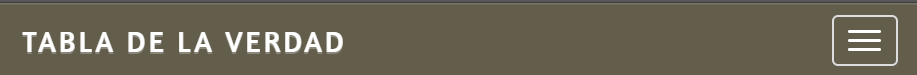
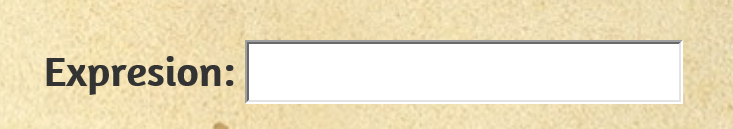
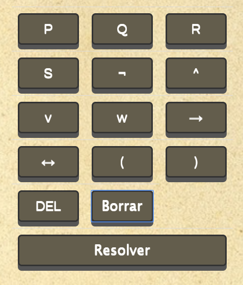
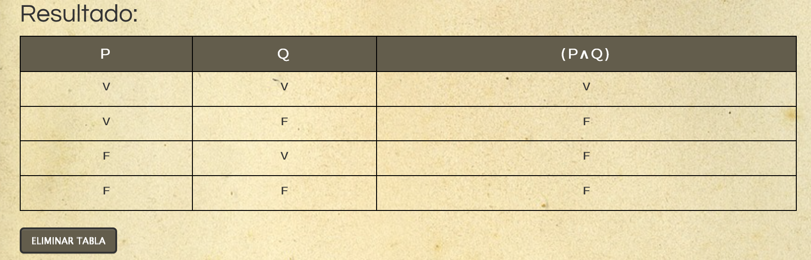

Ayuda
La sección ayuda incluye la información de referencia necesaria para manejar y comprender plenamente los botones y menús que provee la aplicación.
La aplicación consiste en una calculadora que resuelve problemas de lógica, generando una tabla de la verdad posteriormente. Esta compuesta por una barra de navegación, un campo de texto para la expresión, botones para cargar en la expresión y un tabla con los resultados,
Barra de navegación

La barra de navegación proporciona al usuario la posibilidad de acceso a varias opciones en las que son el inicio, la información y la ayuda
En dispositivos más pequeños la barra de navegación tendra la forma como de la segunda imagen
Para interactuar con la barra de navegación solo se debe de hacer click sobre la opción deseada y en el caso de los dispositivos tactiles, presionarlo
A continuación se describira la acción asociada a cada opción
Tabla de la Verdad. Redirige al inicio de la aplicación
informacion. Redirige a la sección de información
Ayuda. Redirige a la sección de Ayuda
Campo de texto de la Expresión

En el campo de texto de la expresión contendrá la expresión correspondiente a ser calculado. Dicho campo permanece desactivado, la única forma de interactuar es mediante el uso de los botones que provee la aplicación
Botones

Cada botón tiene similitud con los botones de los programas de escritorio de Windows, ya que están programados esperando la acción por parte de la interactividad del usuario.
Para interactuar con los botones solo se debe de hacer click con el mouse, o en el caso de un dispositivo táctil, se pueden acceder tocando el botón.
Existen eventos asociados a cada botón que en su mayoria repercutirá al campo de texto en donde irá la expresión. A continuación se describirá cada uno de los eventos.
P. Carga en el campo de texto con el simbolo P
Q. Carga en el campo de texto con el simbolo Q
R. Carga en el campo de texto con el simbolo R
S. Carga en el campo de texto con el simbolo S
¬. Carga en el campo de texto con el conector lógico de negación ¬
^. Carga al campo de texto con el conector lógico de conjunción ^
v. Carga al campo de texto con el conector lógico de disyunción inclusiva v
w. Carga al campo de texto con el conector lógico de disyunción exclusiva w
→. Carga al campo de texto con el conector lógico condicional →
↔. Carga al campo de texto con el conector lógico bicondicional ↔
(. Carga al campo de texto con el parentesís de apertura (
). Carga al campo de texto con el parentesís de cierre )
DEL. Borra el último carácter ingresado en el campo de texto
Borrar. Borra todos los carácteres del campo de texto
Resolver. Resuelve la expresión cargada en el campo texto, y luego cuando finaliza, genera una tabla de verdad hacia abajo
Tabla de la Verdad

La aplicación genera una tabla de la verdad despues de que el usuario presioné el Botón Resolver. La tabla presenta un encabezado haciendo referencia a los simbolos con o sin conector lógico. Según el encabezado se va formando la parte del cuerpo de la tabla, rellenandose con V o F en función a la expresión dada en el encabezado
Luego más abajo hay un botón llamado eliminar tabla, en donde su función es eliminar la tabla generada.